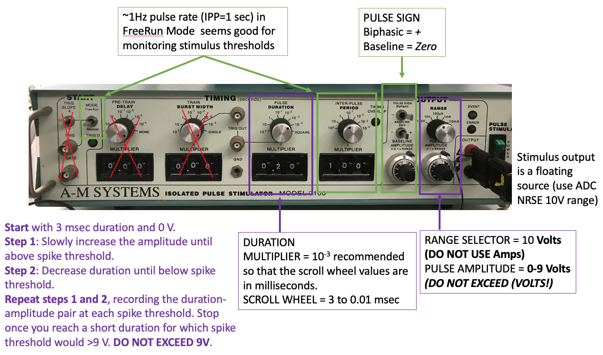

Lab Manual
Contents
Lab Manual¶
Hardware and Software Setup¶
The bonsai script for today has two measurement nodes. Channel 01 (AI0) receives amplified and digitized input from the measurement electrode (referenced to a “ground”). Channel 12 (AI3) receives input from a floating voltage source (the “stimulator” electrodes). Use a sampling rate of 30kHz. Adjust the voltage range for each channel in the AnalogInput parameters to maximize the signal resolution if needed based on your nerve cord recordings (options include: ±0.2 V, ±1 V, ±5 V, ±10 V). Adjust the buffering samples according to your visualization preferences. I recommend starting with ±5 V RSE for AI0 and ±10 V NRSE for AI3.
Surgery¶
Anesthesia : Place the earthworm in the 10% ethanol ringer solution3. Leave it in the anaethesia until you can pick it up without it wriggling away and it stays unresponsive when strongly manipulated. Hallmarks of anesthetic effectiveness are a lack of worm movement and a cessation of the escape withdrawal reflex. The escape withdrawal reflex can be observed by tapping the tail and head with a plastic probe. An alert worm will exhibit a shortening muscle contraction in response to this stimulus, but an anesthetized worm will not have this reflex. The typical time for sufficient anesthesia is closer to ∼20 min for this experiment because they do not need to remain sensitive to touch for electrical stimulation. Leaving the worm in anaesthesia too long will lead to an unresponsive nervous system (and eventually death). Earthworm anesthesia is a problem: dilute alcohol acts very slowly, and often leaves a squiggling worm that is difficult to dissect, while concentrated alcohol “pickles” the outside of the worm, knocking out the responses of touch receptors and threatening the response of the giant fibers. Use the minimum anesthesia you can tolerate. The worm will not get to the point where it is 100% immobile throughout the experiment, but it should not struggle strongly when pinned out.
After suitable anesthesia, pin out the worm dorsal side up on a flat dissecting dish. Place one pin at the anterior end and one pin at the posterior end. Lay the worm so that the part of the body where you intend to open an incision is within the well on the dissection dish.
{kind=link}
For suction electrodes, an incision about two-thirds of the distance from the head to the tail works well. An annelid worm’s nerve cord is near the ventral surface of the worm. With forceps and scissors (not a scalpel), open an incision on the dorsal skin surface. Extend the incision about 2cm straight down the dorsal midline. Fillet the body wall open and pin it flat with a pin in each corner. Insert the pins at very shallow angles so that they do not get in the way of your dissecting tools or (later) the electrode. Flush out the body cavity from time to time with saline to clear blood and dirt.
Cut the gut away from the body wall and remove the segment of gut that lays within the body wall opening.
Use a glass or plastic rod for probing or lifting the nerve cord. Gently cut the nerve cord free of its lateral and ventral connections to the body wall. Then cut the nerve cord near the posterior end of the incision. Do not pinch the cord with forceps. If you must use forceps, try to only touch the very tip of the already cut end and cut off the crushed tip after freeing the cord.
Physiology Setup¶
Place the measurement electrode¶
Clamp a suction electrode firmly in a micromanipulator, attach its electrode connections to the amplifier’s input. Reference (tie) one of the measurement electrodes to amplifier ground. Select a suction electrode tip (and/or make a fresh one) with a tip diameter approximately the diameter of the nerve cord. Getting a tight fit will drastically improve your measurement quality of neural activity. Lower the manipulator so that the tip of the electrode is in the saline near the nerve cord. Gently draw some saline into the electrode; you need to have a continuous column of saline (no bubbles!) that is long enough to reach the electrode’s internal wire (a few cm). Remove any excess saline fron around the measurement well to keep the body of the worm as dry as possible. Wet the exposed nerve cord with saline periodically as needed. The electrode’s external wire needs to be in contact with the saline pool around the nerve cord.
{kind=link}
Place the stimulating electrode.¶
Connect two straight-pin electrodes to the output (red-anode and black-cathode terminals) of a stimulator. At the anterior end, place the anode and cathode stimulation electrode pins through the worm and into the dish below. Place them about 1cm apart and make sure they are not touching. Aim for just lateral of the midline to avoid puncturing the nerve (this is more important for the anode than the cathode). The body surface and the dissecting dish must be dry near the stimulating electrodes, or the saline will “short out” the stimulus and reduce its effectiveness. Use an absorbant tissue to dry the dish and the worm around the stimulating electrodes. Use a roll of absorbant tissue placed under the worm to help keep the anterior end dry if needed. Keeping the worm dry between the stimulating electrodes and the measurement electrodes will reduce the stimulus artifact. In this preparation, I have found that using the earth-grounded foil increases the electrical noise in the recording and does not work as well as it does using the non-invasive measurement techniques.
{kind=link}
{kind=link}
Grounding the prep¶
If there is a lot of environmental electrical noise, you can try: grounding the prep to earth ground; placing a faraday cage around the prep; using true differential recording mode instead of referencing one of the measurement electrodes to amplifier ground.
Experiments¶
Strength-Duration Threshold¶
Warning
The stimulus output must be in voltage mode not current mode. Do not exceed 9V on the stimulus pulse amplitude voltage. If you are still not generating action potentials with a 2V pulse amplitude at 3msec pulse duration, adjust the stimulus electrodes, dry off the stimulated region of the body, and/or dissect a new preparation.
I recommend using the A-M systems stimulators for this experiment because they have the most precise readout of stimulus duration and amplitude on their front panel. If you do not have this stimulator at your rig, do the Paired Pulse experiment first, then come back to this one after another group is done.
{kind=link}
You do not need to record raw voltage signals for this experiment (run the bonsai protocol with the write node disabled). But, after you complete your amplitude:duration data collection, you should enable) the write node to record responses to the following example amplitude:duration settings for making figures later:
at threshold amplitude for 3 msec duration stimulus pulse (rheobase)
at threshold amplitude for the minimum stimulus duration
at threshold duration near 2 times the rheobase amplitude.
Collect your data in the following format:
duration |
amplitude |
|---|---|
ms |
V |
Stimulus Amplitude-Duration Data collection protocol:
Start with a long stimulus duration (3 msec) and low amplitude (0 V).
Increase the amplitude until the Median Giant Fiber(MGF) is above spike threshold. Note the threshold amplitude at that duration in your table.
Caution
If changing the gain on the pulse amplitude, first turn off the stimulus, then turn the voltage knob all the way back to 0, then switch the voltage output gain. Then increase the voltage knob to where you need it before turning the stimulus back on.
Decrease the duration until the stimulus is below AP threshold again and note that new duration in your table.
Increase the amplitude at that duration until it is again above spike threshold. Note the threshold amplitude at this new duration in your table.
Continue decreasing stimulus duration and increasing stimulus amplitude in this way (steps #3 and #4) until you can no longer evoke an AP with less than 9V stimulus amplitude. DO NOT EXCEED 9V stimulus amplitude.
At the end of the experiment, immediately get some control data. Turn the stimulus amplitude back down to 0. Go back to the maximum stimulus duration and re-find the threshold (remember to decrease the amplitude to 0 before re-testing at long stimulus duration).
Repeat #1-6 for the Lateral Giant Fiber (LGF).
Immediately move on to the paired pulse experiment. After you have completed all experiments for today, you can then go back and enter your strength-duration data into a spreadsheet program and save it as a .csv file.
Paired Pulse¶
Run the bonsai protocol with the write node disabled. Double click the channel select nodes to visualize the neuron and stimulus measurements if it does not pop up upon start. In single pulse mode, find the stimulus amplitude needed to reliably evoke a MGF action potential with 200 microsecond (0.0002 seconds) duration.
Warning
The stimulus output must be in voltage mode not current mode. Do not exceed 5V on the stimulus pulse amplitude voltage. If you are still not generating action potentials with a 2-5V pulse amplitude at 0.2 msec pulse duration, adjust the stimulus electrodes, dry off the stimulated region of the body, and/or dissect a new preparation.
Turn off the single pulse stimulation and set up the paired pulse stimulation protocol. You can use any of the stimulators for this experiment. In paired pulse (or train) mode for your stimulator, set the initial parameters to:
Pulse duration 200 microseconds
Delay between pulses 40ms (ISI)
Pulse amplitude just above spike threshold (the point at which an action potential is generated with each stimulus pulse)
Gradually decrease the delay between the two stimulus pulses (ISI), and observe the action potentials. What do you notice? Note the general ISI duration ranges that you notice changes in the signal.
You can use the “Detect Spikes” viewer with a “History” of 5 or so events (and duration of 500msec) to better compare AP shape across trials.
After a bit of observation so that you know what you are looking for, return the IPI to 40msec.
Run the bonsai protocol with the write node enabled (and the analog input and/or channel select nodes enabled). Change the filename as needed.
Gradually decrease the delay between the two stimulus pulses. Get 2 data points for each ISI.
In the ISI range of 40-20 msec, you can step in increments of 10 msec.
In the ISI range of 20-10msec, you can step in increments of 5 msec.
Throughout the IPI range in which the signal changes, step in increments of 1 msec.
Around the absolute refractory period IPI, step in increments of 0.5 msec.
You do not need to write down the IPI on each trial because you will be able to recover that information offline from the raw data recorded in Bonsai-rx. DO note the stimulus amplitude and duration you used and any other information about how you triggered and the general order of IPI that you tested so that you can remember roughly how the raw data is organized later.
{kind=link}
{kind=link}
Measure (and record) the distance between the stimulating anode and the suction electrode (along the length of the worm’s body).
Housekeeping¶
Clean up your area.
Copy data to an external drive or your Google Drive for later.
Use the DataExplorer.py application to explore your raw data in detail. Use the Data Explorer notebook to process and analyse your raw data. Answer the questions in the Responses notebook.
- 1
RSE, ±5 V; electrode inside suction tip goes to an analog input; electrode outside suction tip (in bath) goes to; hot amplifier output goes to an analog input; cold amplifier output (gnd) goes to the AIGND (analog input ground reference) (try having this go to AISN and NRSE).
- 2
NRSE, ±10 V; hot stimulus output goes to an analog input; cold stimulus output (‘gnd’) goes to the AISN (analog input sensor reference) (possible to try having this go to RSE with AIGND, but may cause stimulus artifact in recording).
- 3
The 10% ethanol solution can also be prepared by mixing 30 ml of tap water with 10 ml of 80 proof (40% ethanol) vodka. Carbonated water can also be used as an anesthetic if ethanol is not available. Carbonated water (60%) can be prepared by mixing 30 ml of sugar-free seltzer water (also called “club soda” or “sparkling water” at grocery stores) with 20 ml of tap water.